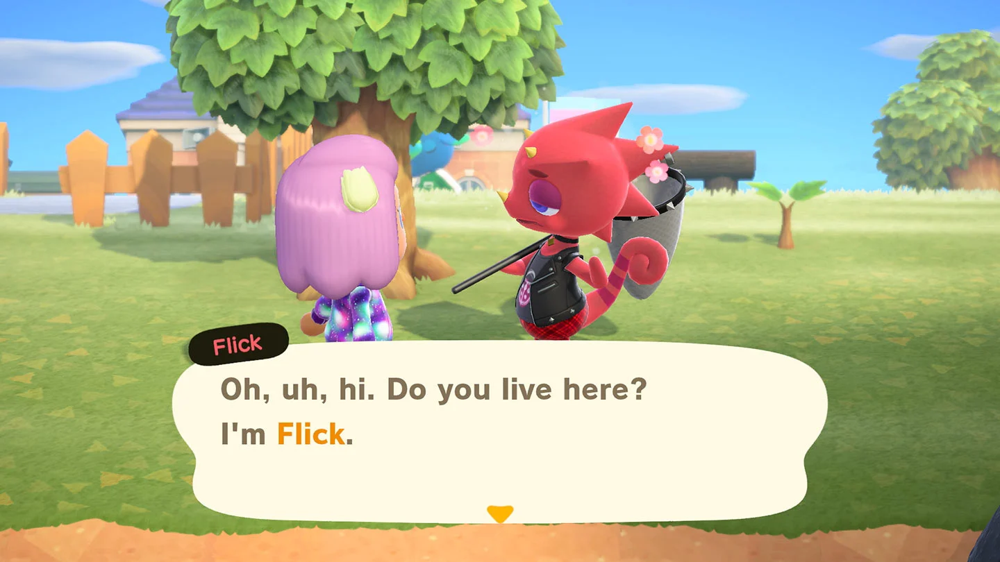
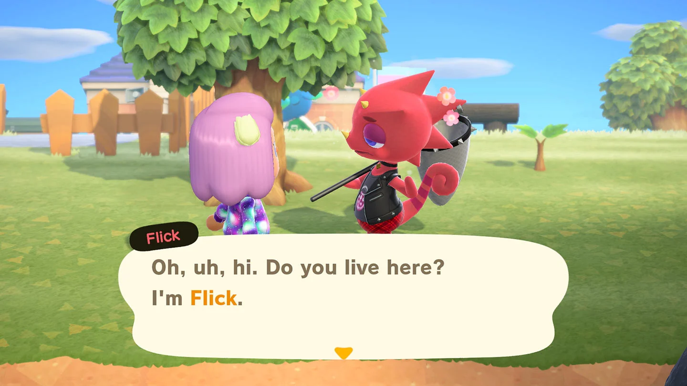
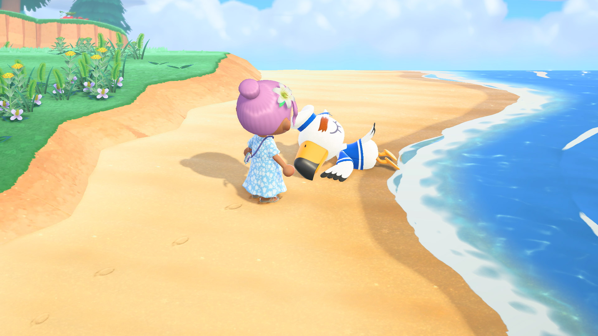

Intermediate
1. Make a fruit tree farm! Making bells in the long run helps paying things and debt.
2. Save your native fruits to sell on a different island for more bells!

3. Save your extra bugs and fish and wait for Flick and CJ. They sell higher than Nook's Cranny.
 

4. Don't use to drop box! You only get 80% of the profits, just wait until the next day!
5. When you build other villager's houses, watch where you put them (same with stores!).
If you don't like them, it costs 50k bells to move each house and store!
6. Fish bait will help find rare fish! Rare fish is depended on luck so the more you fish,
the more likely you'll get the rare fish!
7. Alway hold a net when shaking trees! If a wasp comes out, catching them makes it easy.
Sell them to Flick!
Advanced Tips
1. Buy Turnips on Sunday Mornings! The stalk market is a high risk, high reward.
It is possible to predict hills and dips.
2. There are many websites dedicated to AC:NH! turnip.exchange is a big example.
Many websites help find other islands for a high turnip price and other websites help
find furniture and wanted items! There is also a website to plan out your island!
3.Watch for shooting stars and Celeste! She will give a star related DIY.
Wishing upon the stars will make the beach be filled with shooting stars the next morning.

4. Guliver will give a item when helping him! He spawns randomly. The wisp is also
at a random spawn but shows up at night. Same concept as Guilver, he will reward you with a
new or expensive furniture.
5. Put a work bench everywhere! You never know when you need to craft something
It sucks to walk back and forth to your house.
6. Pay your debt! The larger your house, the larger your storage is so you can collect more items
Fully paying all your debt will allow you to decorate the exterior of your house for free!